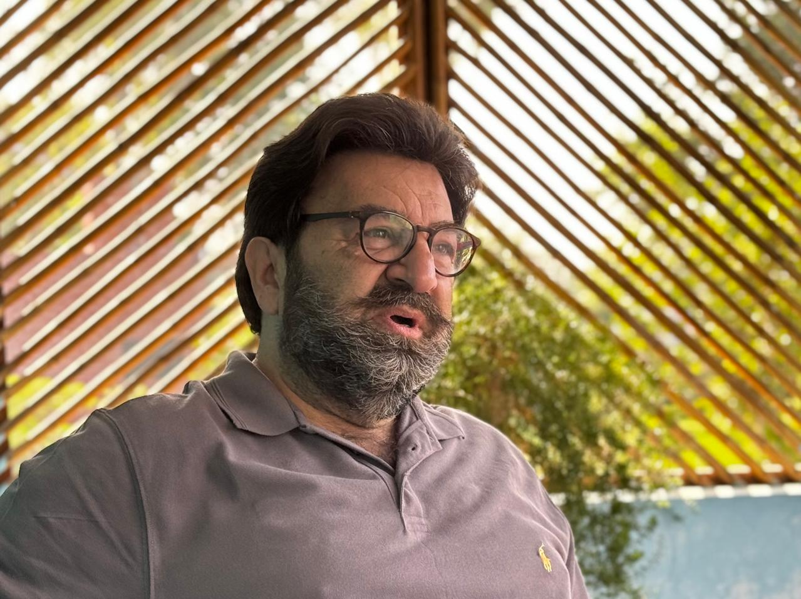
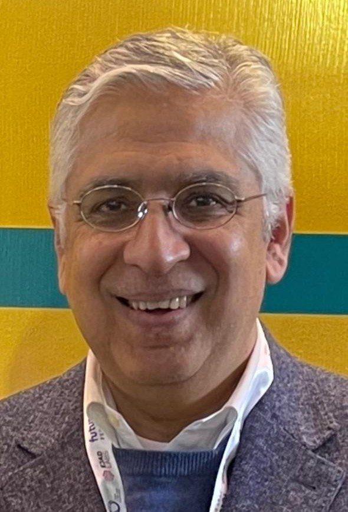
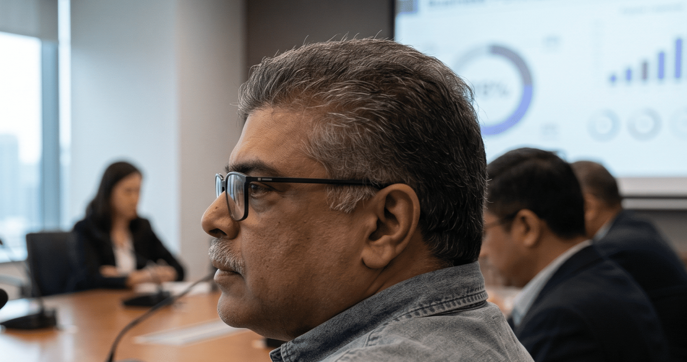
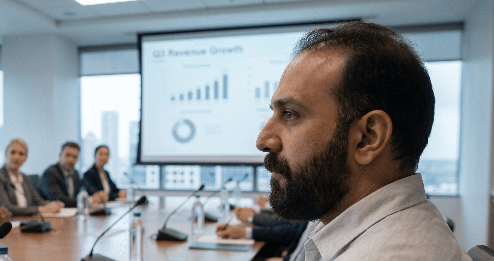
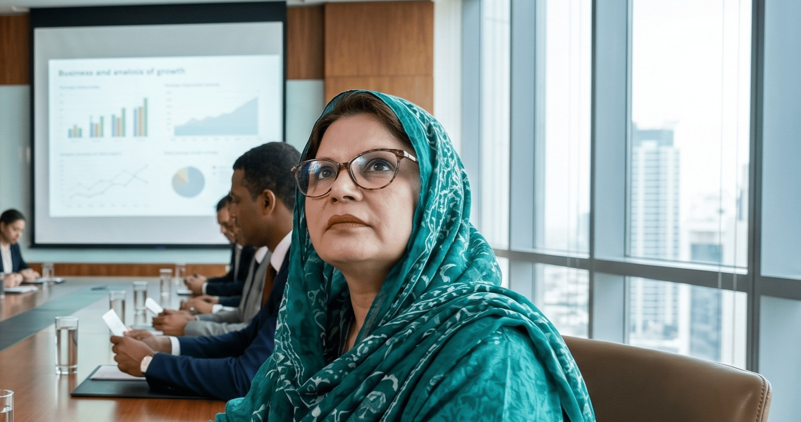
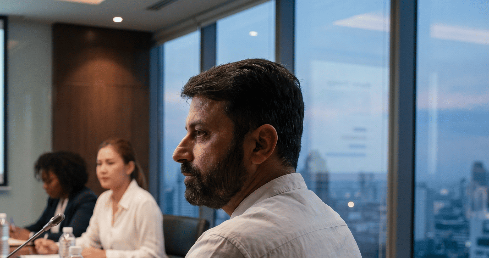

Mr. Muslehuddin
Chief Executive Officer
A veteran in farming best practices and people management, Mr. Muslehuddin brings years of practical experience in successfully managing farm operations, livestock care, and workforce coordination. He has a strong understanding of what decisions are best for the farm's productivity, sustainability, and long-term growth, and he ensures those decisions are implemented effectively through proper planning, staff supervision, and consistent monitoring. His leadership, discipline, and hands-on approach helps maintain high operational standards while creating an efficient and well-managed farming environment.

Mr. Mohammad Nasrullah
Board member
Mohammad Nasrullah is an ex-banking professional having worked in diverse banking sector across different geographical areas in Middle East & South Asia. He has invested in a few ventures, but has been passionate about pursuing agriculture and dairy business, especially in Pakistan. Over the years, he has built a sustainable agriculture, dairy and food business in Pakistan. The establishment of Living Dairies Private Limited is part of his ambition to support continuous food security and to provide nutrition to the people of Pakistan. Over the past two decades, the farm has experienced significant growth and achieved strong profitability. Retired from banking, Mr. Nasrullah is now fully involved in supporting farm operations and its meaningful growth in times to come.

Mr. Shoaib Khalid
Board member
Mr. Shoaib Khalid is a distinguished board member of Living Dairies Private Limited with extensive expertise in operating, managing and supporting the farm business for the last 15 years. Drawing on decades of experience in livestock and farm management, he provides invaluable strategic guidance to the organization and its staff. Mr. Shoaib is considered a specialist in the dairy business, and uses this knowledge to initiate problem-solving initiatives, advising on animal welfare protocols, herd output optimization, and operational challenges. His deep knowledge of agricultural and dairy farming ensures that Living Dairies maintains the highest standards of animal care and farm productivity, directly supporting the company's mission to deliver excellent quality products profitably.
Mr. Salman
Board member
Mr. Salman was the original proponent of investment into modern farming in Pakistan. He had the vision and the dream which led to the start of Living Dairies private limited. He worked with Mr. Nasrullah to establish a running farm from a piece of land. Moreover, he helped lay the foundation of the business practices and ideals that Living Dairies and its founders stand for. Although Mr. Salman no longer plays an active role in the farm management or board decisions, his wisdom, enthusiasm and vision are deeply embedded in the hopes and ideals of Living Dairies.

Mr. Mustafa Muslehuddin
Consultant
Mr. Mustafa Muslehuddin is a young member of Living Dairies Private Limited, currently serving as a consultant to the farm. With a distinguished tenure overseeing the organization's strategic direction, he plays a pivotal role in ensuring alignment between board objectives and on-ground operational realities. His keen oversight and commitment to accountability maintain the integrity of company standards, bridging the gap between corporate governance and field execution. Mr. Muslehuddin's experience and judgment are instrumental in driving operational excellence and ensuring that Living Dairies' core values and quality commitments are consistently met across all divisions.

Madam Tahira
COO food division & Head of sales
Madam Tahira is the COO of the food division and Head of Sales at Living Dairies Private Limited. She oversees financial operations, HR, accounts and the company-owned milk retail shop in Main Market, Lahore. Moreover, she manages milk delivery operations to retail and wholesale customers. With her extensive banking experience, acquired business acumen and meticulous attention to detail, she plays a pivotal role in realizing the organization's goals by meeting sales targets and increasing profitability. Her efforts for the food division ensure alignment between board objectives and on-ground operational realities. Her keen oversight and commitment to maximizing profit and minimizing loss or low profit enterprises help to bridge the gap between corporate governance and field execution. Her experience and judgment are instrumental in driving operational excellence and ensuring that Living Dairies' core values and quality commitments are consistently met by the food division. Her dual expertise in operations and retail exemplifies the integrated approach that drives Living Dairies' continued success.

Dr. Asif Nadeem
Farm Manager and Veterinary doctor
Dr. Asif is the Farm Manager and Chief Veterinary Doctor of Living Dairies Private Limited, bringing a decade of dedicated leadership to the organization. Over the past 10 years, he has transformed farm operations from a state of disorganization into a seamlessly functioning enterprise, establishing robust systems and ensuring disciplined execution of strategic decisions. Dr. Asif currently oversees all day-to-day farm operations while spearheading the implementation of innovative policies and state-of-the-art equipment designed to enhance productivity and profitability. His dual expertise in veterinary science and farm management ensures optimal animal health, operational efficiency, and the achievement of the company's ambitious growth targets.